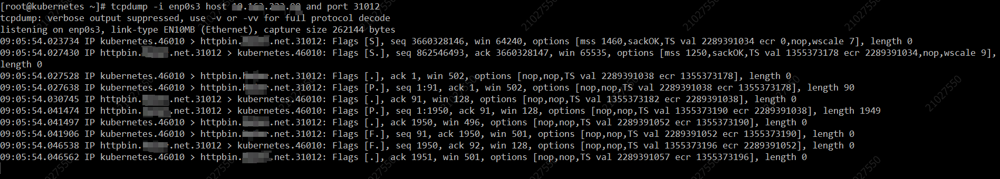
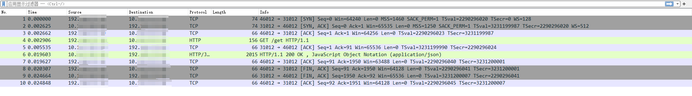
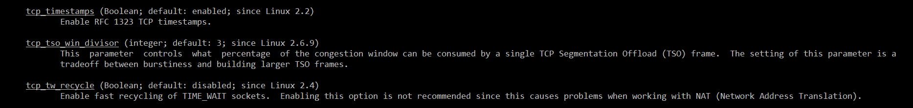

前言
在实际生产网络问题排查时，经常因为搞不清楚网络拓扑结构，而不清楚网络不通的原因，tcpdump是一个很好的抓包工具，配合Wireshark进行转包分析，但因为生产服务器的安全性管控，下载tcpdump抓取的.pcap文件不是很方便，因此需要简单看懂tcpdump的抓包输出。
基础知识
在Linux环境下，可以通过man tcpdump查看使用命令以及过滤参数，下面是一段使用tcpdump抓取的curl访问记录。
curl命令如下：
1 | curl httpbin.xxx.net:31012/get |
tcpdump抓取如下：

再次进行相同的抓取使用-w 抓取到pcap文件中：
1 | tcpdump -i enp0s3 host xx.xxx.xxx.xx and port 31012 -w curl.pcap |
使用Wireshark打开记录如下：

可以比照上下两幅图的记录，根据Wireshark的解析，理解tcpdump的输出记录。
FLags标记
在上图中，可以看到抓到的几条数据的Flags字段各不相同，标识含义：
- [S]：SYN同步标识，TCP三次握手连接建立的发起方。
- [.]：表示ACK确认标识。
- [S.]：SYN同步标识+确认[S]的ACK。
- [P.]：PSH，push推送，数据传输。
- [R.]：RST，连接重置。
- [F.]：FIN结束连接。
- [DF]：Don’t Fragment（不分片）。当DF=0，表示允许分片，一般-v时才有这个标识。
- [FP.]：标记FIN、PUSH、ACK组合，这样做是为了提升网络效率，减少数据来回确认。
SYN ACK SEQ
ACK=SYN SEQ + 1
典型案例
问题现象
开发人员在K8s集群某个Pod中连接外部服务，发现网络不通。重新启动一个Pod访问，又是可以通信的。
问题处理
我们知道，Pod的网络通过veth pair对，会经由宿主机网络然后往外出访问，首先测试了Pod所在的节点到外部服务的连通性，发现是通的。检查veth pair对的虚拟网卡，也没有发现任何异常，Pod与主机通信并无异常。
抓包分析
通过在Pod中抓取发往服务器端的包，发现所有的SYN都没有ACK回应，也就是说服务器端没有给会ACK。为什么服务器端没有给回ACK呢，通过Google搜索，发现有提到net.ipv4.tcp_timestamps和net.ipv4.tcp_tw_recycle同时启用的问题。
开启net.ipv4.tcp_tw_recycle的问题
当网络中客户端存在SNAT的时候，开启net.ipv4.tcp_tw_recycle和net.ipv4.tcp_timestamps，客户端的SYN报文可能会被drop调。因为客户端进行了SNAT后，对服务器而言，多个客户端是通过同一个IP来连接服务器端的（看不到实际客户端的IP）。这个时候timestamp较小的SYN报文就会被服务器drop，因为服务器认为同一个IP的服务器发送的报文是的单调递增的，不可能收到比之前报文时间戳还小的报文。
为什么要开启net.ipv4.tcp_tw_recycle
开启net.ipv4.tcp_tw_recycle为了减少TIME_WAIT状态的socket连接，从而减少内存、cpu使用。
在没有开启net.ipv4.tcp_tw_recycle的时候，如果服务器先关闭连接，socket会停留来TIME_WAIT的状态，直到1个TCP_PAWS_MSL的时间，在此期间，客户端不能使用刚刚使用过的源端口号，否则服务器会直接RST。
可以通过netstat -s 查看服务端对于包处理的统计，可以看到大量被drop的package
问题解决
可以看到，在比较低版本的内核说明（man tcp）中，是不建议开启net.ipv4.tcp_tw_recycle的。

而比较新的内核版本已经去除了该参数的配置说明。因此关闭该内核参数后，服务访问正常。
1 | sysctl -w net.ipv4.tcp_tw_recycle=0 # 立即生效 |